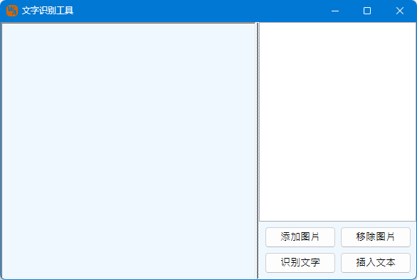
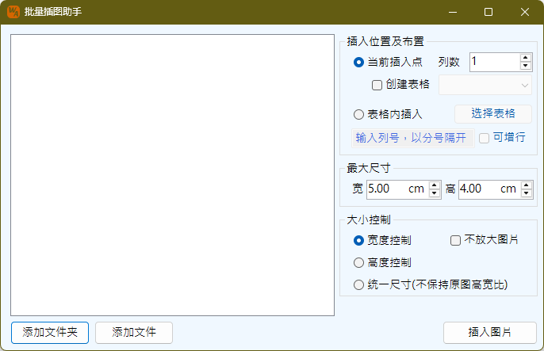

为Word提供一些便捷的操作工具，暂时包括批量转存PDF与OCR文字识别功能两项。
单击工具箱下批量转存PDF按钮调出如下工作界面：

通过界面右侧的添加文件、添加文件夹、移除文件、清空文件按钮进行文件的选择操作，本功能仅为Word文件转存PDF文件使用，因此文件只识别“*.doc”和“*.docx”后缀的文件。列表框支持拖拽输入，将Word文件拖拽进入列表框，也可以选择输入文件。
同一个文件夹下相同的文件名的文件不可以重复添加，但是不同文件夹下，相同文件名的文件可以添加。
输出位置提供两种输出方式，一种为在Word文件所在目录直接输出PDF文件，另一种是集中输出到指定的文件夹下。
使用转存PDF文件功能需注意如下事项：
工作界面如下：
左边的窗口为显示图片区域，可以通过添加图片按钮添加图片，一次可以添加多张图片，也可以将图片文件直接拖拽进入图片框内。图片添加后，不会立刻开始执行识别，知道点击识别文字按钮时才开始识别当前图片，识别的结果将显示在左侧的文本框内。当使用插入文本按钮时，程序会将文本框当前选择的内容插入到Word文档当前光标位置，如果未择文本，则将文本框全部内容插入。文本框可以进行编辑修改，但修改的内容并不保存。
添加多张图片时，图片窗口两侧显示切换图片的按钮，对图片进行切换，当前图片已经识别的文字将再次出现在右侧文本框内，如果当前图片未曾识别，则文本框显示为空。
移除图片会一次清除所有图片，包括识别结果。
使用OCR工具需注意如下事项：
将选择的内容直接导出到磁盘保存为一张PNG图片。选择内容可以是文字，表格或图形等。
批量插图工具可以批量按照设定的布置方式、大小样式将图片插入到文档中，界面如下：
界面左侧为图片列表，通过下方的添加文件夹、添加文件按钮，将图片文件（jpg、jpeg、bmp、png、gif、tiff格式）添加到列表中。然后选择需要添加的图片，完成右侧的设置后，即可添加到文档中。
插入点位置：包括2种插入模式，一种为在当前光标位置插入图片，此模式下可以新建一个表格插入图片，也可以直接插入通过制表位对齐。另一种方式为选择一个既有的表格进行插入。注意：新建表格插入图片，图片高度并不受表格限制。
当前插入点插入图片时，设定图片布置的列数，行数由图片数量最终决定。如不创建表格插入，则将采用制表位方式，将图片按照指定的列数进行插入。当选用表格内插入时，首先需要选择目标表格。已选择目标表格时，选择表格按钮文字上会多出一个符号“▦”，用于提示已选择表格。指定要插入的列号，指示将图片插入到第几列，可指定离散的列，例如1;3;5，如此，图片将逐行在第1、3、5列单元格顺序插入图片。不指定的情况下表示所有列均插入图片。可增行选项指示，当前表格行数不足，所选图片还未插入完成，是否允许程序增加表格的行数，以保证将所有图片插入表格中。开始输出行此参数并未出现在设置系界面，程序执行的逻辑是默认从第1行开始输出，但是如果存在重复标题行，则程序将从重复标题行之后的第1行开始输出。注意：与插入点新建表格不同的是，插入既有表格时，图片受既有表格单元格空间大小限制，因此在插入图片前，需先行调整好表格的尺寸。如果是新增行，则新增行继承最后一行的布置。
最大尺寸与大小控制，指示图片可达到的最大尺寸，但图片还受制于页面布局影响，首先是纸张可用尺寸、指定列数后会继续缩小单张图片的可用尺寸。因此程序首先会用实际可用的空间大小限定图片的大小，已完成布局。之后，如图片尺寸仍大于最大尺寸，将按照大小控制策略，对图片尺寸进行调整。宽度控制与高度控制，指示将图片按照高宽比不变的方式，将宽度或者高度设定为指定的值。例如图中设置最大尺寸为5cm x 4 cm，图片经过可用空间限制调整后的尺寸为6cm x 6cm，如果宽度控制，则图片的最终尺寸为5cm x 5cm；如果高度控制则最终尺寸为4cm x 4cm；如果统一尺寸，则图片最终尺寸为5cm x 4cm，图片可能因此变形。不放大图片指在宽度控制、高度控制的情况下，如果图片本身小于设定的高宽值的时候，不对图片做放大处理，这样图片会保持原本的尺寸。
批量插图助手使用特别说明：